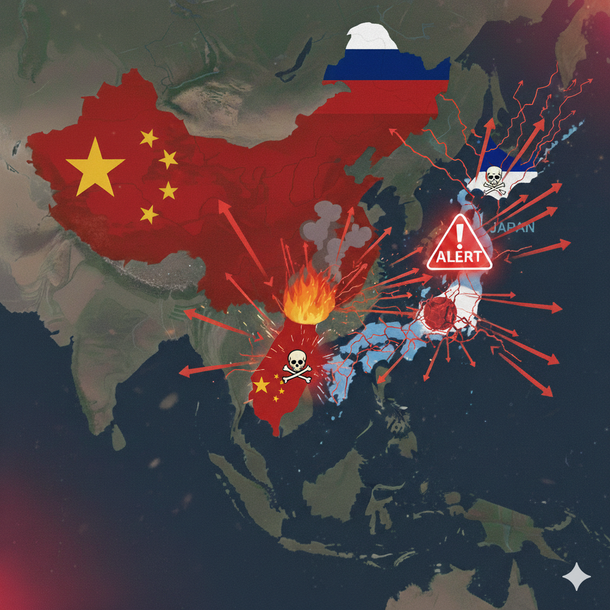

平成以降
平成
- 1989年
- 独ベルリンの壁崩壊、ソ連アフガニスタン撤退、中国第二次天安門事件消費税3%、日産[スカイラインR32型GT-R]スイスCERN[WWW]*
- 1990年
- イラク・クウェート侵攻、東西ドイツ統一、バルト三国独立バブル経済崩壊、ペットボトル入り緑茶Python言語誕生 シマノ[STIレバー]*
- 1991年
- 湾岸戦争、ソ連解体、ユーゴスラビア内戦東京新宿都庁、雲仙普賢岳火砕流 Linux開発*
- 1992年
- X Window SystemをLinuxに移植新幹線[のぞみ] カンパニョーロ[エルゴパワー]*
- 1993年
- EU(欧州連合) ← EC、パレスチナ暫定自治協定 米マイクロソフト[Windows3.1日本語版]、Linuxディストリビューション[Slackware]*
- 1994年
- ルワンダ虐殺(民族紛争)、パレスチナ暫定自治政府松本サリン事件 米Amazon設立、ソニー[PlayStation]、PHP言語誕生スイス[DT Swiss]*
- 1995年
- 阪神淡路大震災、地下鉄サリン事件、戦後50年村山談話 米マイクロソフト[Windows95]、[Netscape Navigator]、Java言語誕生、JavaScript言語誕生*
- 1996年
- パレスチナ自治政府発足バンダイ[たまごっち] 米マイクロソフト[WindowsNT]、検索サイト[Yahoo! JAPAN]*
- 1997年
- 英香港主権返還アジア通貨危機、英ダイアナ妃事故死 北海道拓殖銀行経営破綻、山一証券廃業、東京湾アクアライン開通米Google設立*
- 1998年
- 北朝鮮弾道ミサイル発射*
- 1999年
- NATOユーゴ空爆、ポルトガルマカオ主権返還 ソニー[AIBO]*
- 2000年
- 米ITバブル崩壊携帯電話普及50%C#言語誕生*
- 2001年
- 米同時多発テロ、米アフガニスタン空爆JR東日本[Suica] 米マイクロソフト[WindowsXP]、米アップル[iPod](5GBHDD内蔵)、[ウィキペディア日本語版]*
- 2002年
- 東ティモール独立、日朝首脳会談、AU(アフリカ連合)←OAU通貨ユーロ移行学校週5日制 インターネット普及率50%超え*
- 2003年
- イラク戦争開戦ヒトゲノム解読TV地上デジタル放送開始 米スペースシャトル空中分解事故*
- 2004年
- スマトラ島沖地震九州新幹線[熊本-鹿児島] 米Facebook設立*
- 2005年
- 京都議定書発効[Googleマップ]*
- 2006年
- 北朝鮮地下核実験iPS細胞*
- 2007年
- 気象庁[猛暑日]米アップル[iPhone]*
- 2008年
- 米リーマンショック全都道府県[土砂災害警戒情報]*
- 2010年
- アラブの春、尖閣諸島中国漁船衝突事件東北新幹線全線開通*
- 2011年
- シリア内戦世界人口70億人到達東日本大震災、福島第一原発事故、九州新幹線全線開通*
- 2012年
- 中国共産党習近平氏総書記選出東京スカイツリー、尖閣諸島国有化*
- 2014年
- ISISイスラム国樹立宣言スマートフォン普及50%*
- 2015年
- 仏パリ同時多発テロ、ASEAN共同体 英DeepMind[AlphaGo]、米Joseph Redomon氏[YOLO]*
- 2016年
- 北朝鮮水爆実験発表、FOIP(自由で開かれたインド太平洋)提唱*
- 2018年
- 埼玉熊谷41.1度*
- 2019年
- 香港学生デモ、仏独アーヘン条約訪日外国人旅行者3千万人*
令和
- 2020年
- 新型コロナウィルス米OpenAI[GPT-3]*
- 2021年
- 香港選挙制度変更決定気象庁[線状降水帯]予報*
- 2022年
- 露ウクライナ侵攻世界人口80億人到達独ミュンヘン大学[StableDiffusion]*
- 2023年
- フィンランドNATO加盟、イスラエルガザ侵攻インド人口世界一、トルコ・シリア地震*
- 2024年
- スウェーデンNATO加盟、イランイスラエル攻撃*
- 2025年
- 群馬伊勢崎41.8度*
将来（WW3が起きない場合）
- 2026年
- 気象庁[酷暑日]*
- 2027年
- 米中包括的経済協定、インドネシアCPTPP加盟*
- 2028年
- 米インド太平洋軍再編、在日在韓米軍基地縮小、台湾総統選挙、韓国CPTPP加盟*
- 2029年
- 東アジア自由貿易圏（ASEAN+3:日中韓）、中国国家統一法制定、日豪安全保障条約 ← 日豪安全保障協力*
- 2030年
- 中国海警局による台湾商船の臨検で物流を制限（台湾を経済的に締め付ける）先端技術中国1強顕在化*
- 2031年
- 中国台湾統一（無血併合）、比CPTPP加盟気象庁[極暑日]*
- 2032年
- 日比安全保障条約*
- 2035年
- GDP:中国 > 米国 > インド > 日本*
- 2048年
- 朝鮮半島平和条約*
- 2050年
- GDP:中国 > 米国 > インド > インドネシア*
- 2058年
- 高麗連邦共和国*
- 2075年
- GDP:中国 > インド > 米国 > インドネシア*
- 2076年
- 新気候区分*
将来（WW3が起きる場合）

- 2026年
- 気象庁[酷暑日]*
- 2027年
- インドネシアCPTPP加盟*
- 2028年
- 韓国CPTPP加盟、台湾危機、中国海警局による台湾商船の臨検で物流を制限（台湾を経済的に締め付ける）*
- 2029年
- 中国共産党軍が台湾離島(金門島,馬祖島,東沙諸島)占拠、日本エネルギー供給混乱、台湾半導体供給停止で世界混乱、日豪安全保障条約 ← 日豪安全保障協力*
- 2030年
- 米中軍事衝突（軍基地攻撃）、日米豪対中国開戦先端技術中国1強顕在化*
- 2031年
- 北朝鮮が韓国侵攻・東アジア大戦に発展、ロシアが北朝鮮を軍事支援、中国共産党軍が台湾本島上陸気象庁[極暑日]*
- 2032年
- NATOロシア開戦・WW3に発展、ロシアが北海道侵攻・日露開戦、中国内戦（自治区独立運動）*
- 2033年
- ロシア軍事力疲弊、米韓が北朝鮮占領、台湾本島から中国共産党軍撤退*
- 2034年
- 中国分裂（自治区から中国共産党軍撤退）、東アジア平和条約（高麗,台湾,チベット,東トルキスタンを国家承認）*
- 2035年
- GDP:中国 > 米国 > インド > 日本*
- 2050年
- GDP:中国 > 米国 > インド > インドネシア*
- 2075年
- GDP:中国 > インド > 米国 > インドネシア*
- 2076年
- 新気候区分*
未来（行く末）
- 2192年
- ガミラス帝国地球攻撃開始*
- 2199年
- ヤマト発進*
- 2200年
- ヤマト帰還、地球復興*
- 2800年頃
- 火の7日間（産業文明崩壊）*